Bleak Forest
Open-ish License v1.0 Sept 2026
© Johnathan L. Bingham & Ostensible Cat Design

What's Free to Use
The core mechanics of the Bleak Forest Game Engine are yours to play with. Use them in your own games, hacks, adventures, supplements, or whatever strange little zine your fevered brain concocts at 2 AM. Sell it, share it, print it, post it, whatever - go wild.
This includes:
- The basic rules as expressed in the Bleak Forest Core Rules Engine
- Character creation
- Procedures, subsystems, and gameplay loops
- Anything explicitly marked as Open Content
If it looks like a rule and not a piece of art or lore, it’s probably open. Just please, don’t copy my stuff word for word.
What's NOT Free to Use
Some stuff stays mine. Not because I’m precious about it (OK, I am), just because it’s my art and my world, and I’d like to keep those bits intact.
Not open:
- All artwork, illustrations, icons, and maps
- All layout, trade dress, and graphic design
- The Bleak Forest setting, lore, factions, and named entities
- The Abrikoth and all other setting-specific weirdness
- The Bleak Forest name, logo, and branding
- Anything labeled Product Identity
Product Identity (The Stuff I’m Keeping)
The following are mine, not yours to remix without permission:
- “Bleak Forest,” “Escape the Bleak Forest,” “Beyond the Bleak Forest”
- The Abrikoth, the Six Avatars of Corruption, and all named lore
- All art, symbols, and trade dress by Johnathan L. Bingham and Ostensible Cat Design
- Setting-specific terms, cosmology, and narrative text
Basically: rules = open, arty flavour stuffs = mine.
If You Publish Something Using These Rules
Just include a little note like this:
Mark your own Open Content however you want: highlight it, footnote it, scribble it in the margins. Just make it clear.
No Official Blessings
Using this license doesn’t make your project “official.” It doesn’t make me your publisher, your editor, or your cosmic overlord. It just means you’re allowed to play with the toys.
Future Versions
If I update this license, you can stick with this one or use the new one. I’m not a cop, and I’m not here to trap you.
By Using the Rules…
…you’re agreeing to all of the above. No blood pact required (though, I MAY perform one ayway).